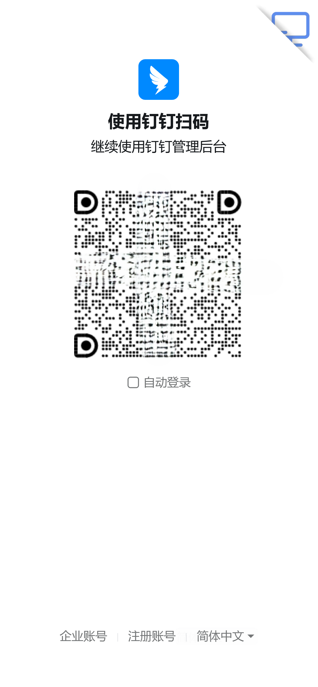
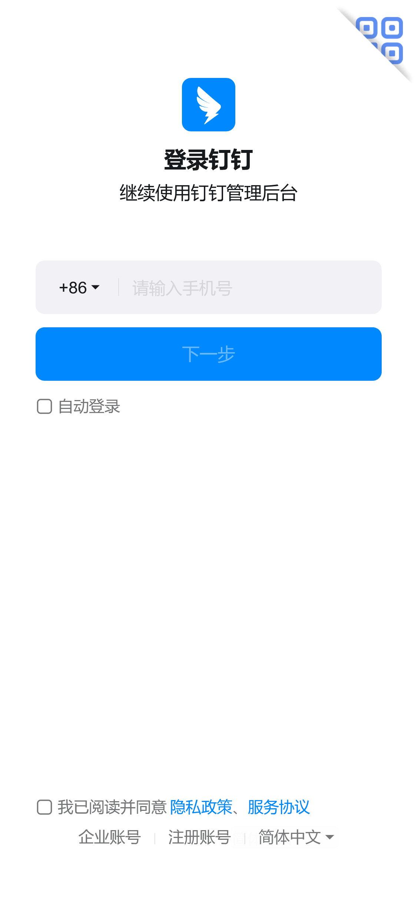

使用钉钉登录自己的网站
使用场景
使用钉钉登录的使用场景可以按多个维度划分。
钉钉应用
首先要区别是否在钉钉系统内。在钉钉系统内可以做到用户无感登录应用，因为用户已经登录过钉钉。
不论是小程序还是 H5 微应用，都可以通过钉钉 jsapi 中的getAuthCode接口直接获取用户身份凭证。
注意业务网址需要在钉钉开放平台中应用的安全设置端内免登地址中配置，否则getAuthCode会报错。
移动应用
在移动应用中，钉钉只提供原生登录方式，需要跳转钉钉客户端进行授权。目前支持Android和iOS。
在这不做具体介绍，有需要可以直接查看官方文档，讲得挺详细。
网页
钉钉对网页登录只提供两种方式：
- 二维码扫码登录
- 账号密码
其中，二维码扫码基本只能在 PC 端使用，不能要求用户有两台手机吧，截图再跳转钉钉扫码登录也行不通。
账号密码的登录方式则对用户不友好，谁愿意记住那么多账号密码，何况在手机上输入一长串密码也是一件痛苦的事。
但没办法，不提供手机短信验证码的设计估计一方面是降低短信成本，另一方面是逼迫用户下载钉钉客户端。
使用钉钉登录网页
跳转登录
使用跳转登录非常简单，我们只需要构造一个网址，然后跳转过去就行了，使用 oauth 授权。
1 | https://login.dingtalk.com/oauth2/auth? |
其中，redirect_uri 是登录成功后的回调地址，client_id 是钉钉开放平台应用的 AppID，scope 是授权范围，state 是用于透传自定义数据。
注意redirect_uri需要在钉钉开放平台中应用的重定向URL（回调域名）中配置，否则会报错。
跳转的页面提供二维码扫码登录和账号密码登录两种方式，用户可以选择。
 也可以跳转到一个只有二维码的扫码页面：
1 | https://oapi.dingtalk.com/connect/qrconnect? |

或者一个只有账号密码的登录页面：
1 | https://oapi.dingtalk.com/connect/oauth2/sns_authorize? |
内嵌登录
内嵌登录只支持内嵌二维码扫码登录。我们需要构造一个网址，然后装在一个 iframe 中。
1 | https://login.dingtalk.com/login/qrcode.htm? |
这个网址官方并没有列出，可以从ddLogin.js代码中找到。
goto 的参数意为扫码成功后跳转的地址：
1 | https://oapi.dingtalk.com/connect/oauth2/sns_authorize? |
与上面只有账号密码的登录页面的网址一模一样。
当用户扫码并确认登录后，iframe 会通过window.parent.postMessage(loginTmpCode,'*')向 window emit 一个message事件，我们可以监听这个事件，拿到loginTmpCode。
拿到loginTmpCode后，需要构造并跳转到这个链接。
1 | https://oapi.dingtalk.com/connect/oauth2/sns_authorize? |
和上面 goto 的参数基本一样，只是多了一个loginTmpCode参数。